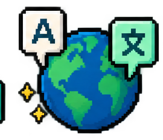

Role and work context shape the conversation or case.
Learner-facing AI
Learner-facing AI brings a responsive partner into the learning experience. I design it to vary scenarios and content paths by learner need, challenge people to apply what they know, and give specific feedback while the decision is still fresh. The goal is practice that feels closer to the work, not just a faster way to deliver information.
Customized scenariosAdaptive pathsDeeper practiceFeedback in the moment
When AI earns a place
Learning can respond to the person and the work in front of them.
One course rarely fits every role, prior experience, customer situation, or question. I use learner-facing AI to design more specific challenges, route learners toward the practice they need, and respond to their reasoning in the moment. This lets a shared curriculum feel more relevant without hand-authoring every possible path.
Evidence of understanding shapes the next challenge.
The learner can see why a response works while it is fresh.
Learner-facing AI in practice
Five different ways to make the learning respond.
Each approach answers a different learning need. The interactions below are portfolio-safe demonstrations of the design patterns, using fictional content and your choice of platform or custom build.
01 / Conversation practice
AI-powered roleplay & simulations
I design the character, challenge, and feedback criteria so an AI-supported version can react to a learner's own questions. This scripted preview shows the learning contrast: probing opens discovery; pitching early closes it.
Best for: sales discovery, coaching conversations, objection handling, and difficult decisions.
Build route: custom experience or a platform such as Mindsmith Conversations.
ROLEPLAY / CUSTOMERScripted preview
Customer says“Our team keeps losing time at handoffs.”
Customer opens up“The delay affects every site transfer.” Ask for frequency before proposing a fix.
02 / Practice path
Adaptive learning engines
The next challenge can respond to demonstrated understanding. A missed concept can trigger another worked example; a strong response can move the learner into a more complex application instead of repeating what they already know.
Best for: skill progression, varied prior knowledge, certification practice, and refresher learning.
Build route: custom adaptive rules, delivered through a learning platform such as Cornerstone Learn.
ADAPTIVE PATHPerformance → next step
Check resultNeeds practice
03 / In-course support
Virtual tutors & AI chatbots
A course-aware assistant can clarify jargon, answer a question from approved learning material, or point to the right lesson without making the learner leave the module. When the material cannot support an answer, the assistant should route to a source or person.
Best for: technical concepts, self-paced learning, and point-of-need clarification.
Build route: a custom course bot embedded in a course module or LMS.
COURSE ASSISTANTInside the module
Ask about this lessonUsing the approved course guide
From the guideA handoff is where responsibility moves from one team to another.Open the handoff example in this lesson →
04 / Evidence of learning
Automated assessment & instant feedback
Immediate feedback can do more than mark an answer right or wrong. I can design visible criteria and follow-up guidance for selected responses, handwritten work, explanations, or code, choosing the review method for each format. Patterns in responses can also guide content tuning; consequential judgments still need human review.
Best for: short responses, skill practice, coding exercises, and rubric-supported review.
Platform routes differ: Gradescope supports selected grading workflows; Talespin and Cornerstone Immerse support simulation feedback. Articulate AI Assistant helps authors draft checks.
RESPONSE REVIEWFictional example
Learner explains“Two approvals delay each site transfer.”
Uses evidence
Explains impact
Compare the response with the two visible criteria.
05 / Multimedia delivery
AI video presenters
Avatar-led video can turn a lesson into a consistent, localized explanation. I would pair the presenter with a pause, question, or scenario decision so learners do more than watch; the video remains part of an instructional sequence.
Best for: multilingual launches, product explainers, and repeatable demonstrations.
Production routes include Synthesia, HeyGen, Colossyan, Camtasia Pro, Articulate's avatar tools, or a custom workflow.
AVATAR LESSONLocalized preview

CaptionsCustomized Curriculum
One learning goal. Practice shaped to the learner.
Traditional branching asks designers to author each route one by one. With an AI-supported avatar, I can define the learning goal and guardrails once, then vary the customer context, challenge, feedback, and next practice by learner profile. That makes tailored curriculum possible at a scale that hand-built branches struggle to reach.
Learner profile
Customer situation
Practice level
New seller+Handoff delay+Guided→Scenario variation
Traditional branchOne authored follow-upEach variation is authored separately.
Customer cue“Our work waits when responsibility moves between sites. What would you ask first? Start with one clue.”
Tailored next move
PracticeIdentify the handoff delay
Feedback focusName the cue that matters. Use the highlighted clue.
Next contentGuided handoff example
Scripted illustration of parameter-based design, not a live model. The objective stays fixed while each input changes the scenario or support.
Development example
A contained conversational guide with a clear job to do.

Sanitized development example
The Hiring Guide turns a broad portfolio into a focused visitor journey.
It is a contained, public-facing example of a conversational experience: a visitor arrives with a hiring question, gets routed toward relevant evidence, and can choose a direct next step. The design makes the guide’s purpose and limits clear instead of treating it as an all-purpose authority.
Focused content spaceCurated response pathsClear human next step
Explore the Hiring Guide